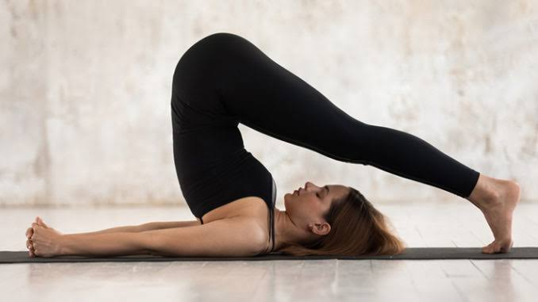
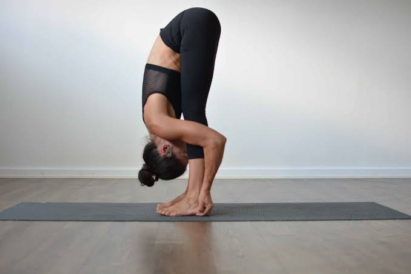
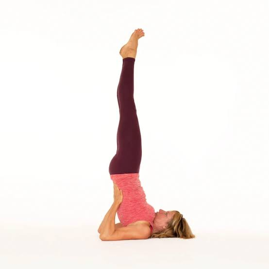
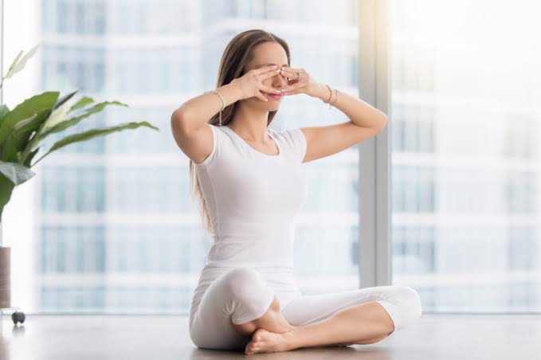
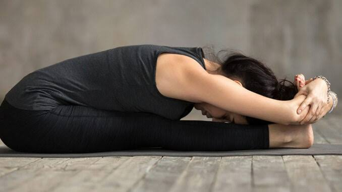

Yoga

Halasana Steps
1.Lie on your back. Join the legs together. Relax the whole body (Shavasana position).
2.Keep the palm flat on the ground. Keep breathing normally.
3.While exhaling press the palm on the ground and raise both the legs upwards straight then try to touch the ground just behind.
4.Breathe slowly and hold the posture for several minutes (1-2 minutes).
5.Now slowly release the pose to return to Shavasana.
6.Repeat this for 3-5 times.

Padahastasana Steps
1.Stand straight with feet 2 inches apart.
2.Inhale slowly and raise the arms up.
3.Stretch up the body from the waist.
4.Exhale and bend forward until both palms rest on the ground.
5.Maintain this final posture for 10-30 seconds with normal breathing.
6.Now inhale, come up slowly to the upright position.
7.Exhale, slowly return to the starting position.

Sarvangasana Steps
1.Lie down in the supine position or lying on your stomach.
2.Raise your legs slowly upward and bring it to 90° angle.
3.Bring the legs towards head by raising the buttocks up.
4.Raise the legs; abdomen and chest try to form a straight line.
5.Place the palms on your back for support.
6.Place the chin against the chest.
7.Maintain the position as long as comfortable.
8.Try to maintain the pose up to 30 seconds or more.
9.Slowly return back to the original position.
10.While doing this, first lower the buttocks with hands supporting the back and slowly come to the surface or in the original position.
Perform it twice or thrice.

Bhramari Pranayama Steps
1.Choose a peaceful and clean surrounding to practise this pranayama
2.Sit over a mat in easy posture (cross-legged)
3.Keeping your back straight, close your eyes and focus on your breathing
4.Gently press your earlids using thumbs.
5.Place both your index fingers on forehead and the remaining fingers on eyelids.
6.Now breathe in deeply through both the nostrils. And as you breathe out, produce a humming sound without opening your mouth.
7.Feel the vibrations in the jaw, lips and throat.
Repeat it 3-5 times as recommended by your yoga instructor

Paschimottanasana Steps
1.Bring your arms straight out to the sides and up over your head, reaching toward the ceiling.
2.Inhale and draw your spine up long.
3.As you exhale, begin to come forward, hinging at your hips. Imagine your pelvis as a bowl of water that is tipping forward.
4.On each inhale, lengthen your spine. You may come a bit out of your forward bend to do this.
5.On each exhale, deepen into your forward bend. Imagine your belly coming to rest on your thighs, rather than your nose coming to your knees. This will help you keep your spine long.
6.Keep the neck as the natural extension of your spine, neither cranking it to look up nor letting it go completely.
7.When you have come to your full extension with the spine long, decide whether you want to stay here or let your spine round forward.
8.Take hold of your ankles or shins, whichever you can reach. You can also use a strap around your feet. Keep your feet flexed strongly throughout.
To Keep in Mind:
It is essential that during practice, the older people should not push themselves and do only as much as their body permits.
Even a long duration of a yoga session is not suitable for them. Short and simple is ideal.